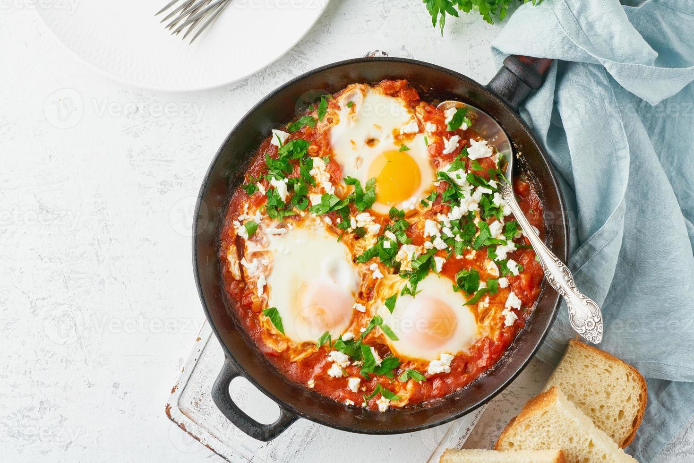

If you want to start the day off right or just enjoy breakfast for dinner there are some great options.
Below you will find breakfast options. These meals will sustain all your hunger needs!!!

Shakshuka is a savory tomato and egg breakfast from Northern Africa that has just the right amount of spice. Shakshuka Recipie